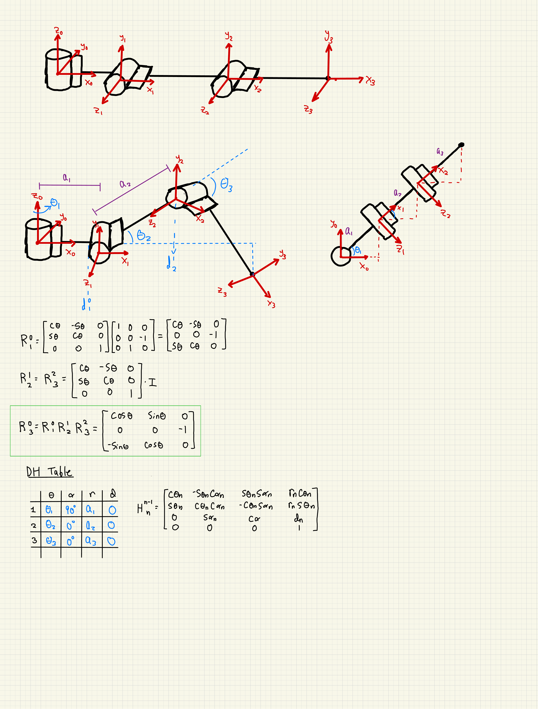
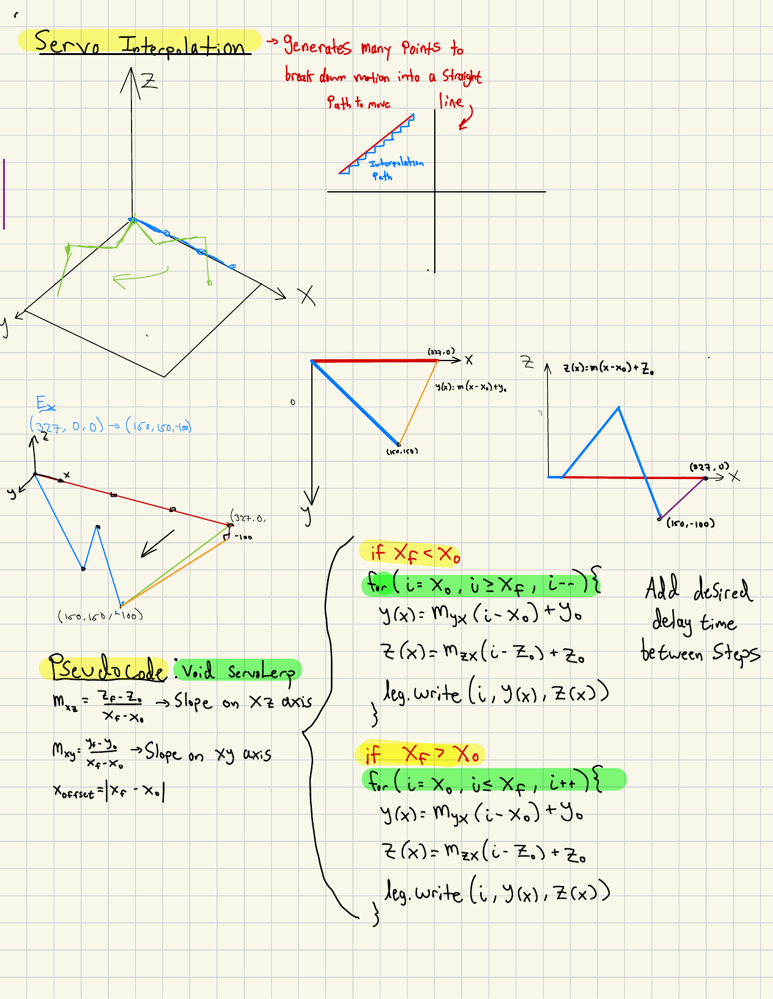
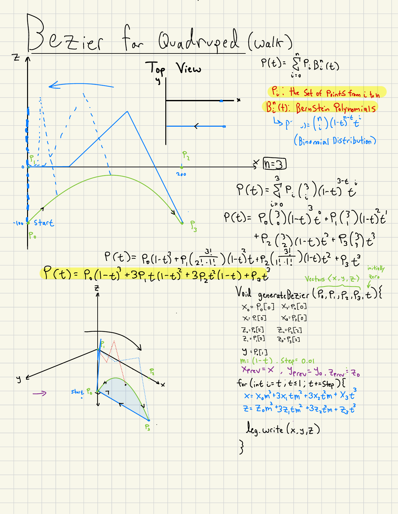
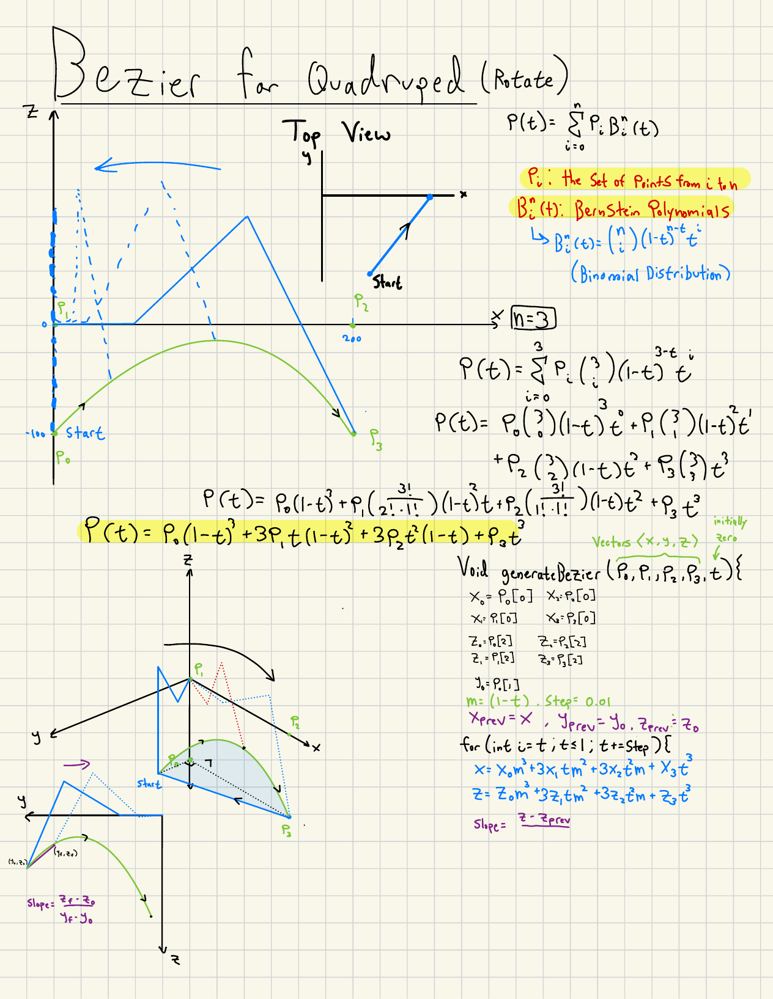
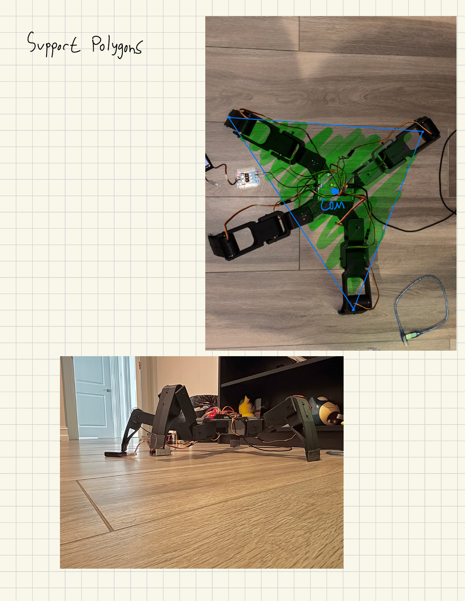
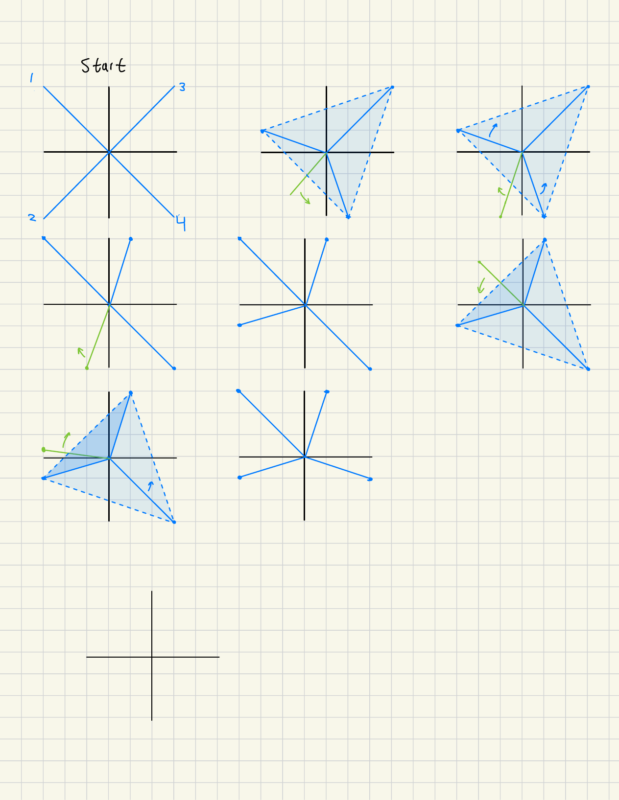

FIG. 01 — HEXAPOD ASSEMBLY, FUSION 360
SCALE: N/A
A six-legged walking robot developed end-to-end: analytic inverse kinematics, Bézier-curve foot trajectories, and tripod gait planning — derived by hand, validated in Python simulation, and built into a Fusion 360-designed platform driven by Arduino.
01 — SYSTEM OVERVIEW
The core idea: develop the mechanics and the control math together, so the CAD geometry, joint limits, and gait strategy all support one realistic walking motion — instead of solving each in isolation.
Derived forward and inverse kinematics for each 3-DOF leg — law-of-cosines joint solutions, DH parameters, and per-leg frame conventions.
Cubic Bézier swing paths for walking, plus a slope-adjusted variant for in-place rotation. Multi-servo moves are speed-scaled so joints arrive at targets simultaneously.
Stance/swing sequencing built on support-polygon analysis — the platform stays statically stable at every phase of the cycle. Currently implementing a tripod gait.
Six identical leg modules around a symmetric chassis, modeled in Fusion 360 with joint travel limits and leg workspace matched to the control envelope.
02 — KEY WORK
03 — DERIVATIONS
The math behind the motion, derived by hand. Each tab covers one part of the control problem — click any page to enlarge.

Forward kinematics — end-effector position from joint angles across three joint frames.

Inverse kinematics — law of cosines solves joint angles from a target foot position, with separate cases for Z < 0 and Z ≥ 0.

DH parameters and rotation matrices — coordinate transformations between joint frames.

Servo interpolation — foot trajectories broken into small linear steps via XY/XZ plane slopes, iterated with a configurable delay per write.

Bézier walk — four control points define a smooth arc that lifts, swings, and places the foot cleanly.

Bézier rotate — a slope term per step curves the swing so the foot traces an arc for turning.

Support polygon — the robot is statically stable while the center of mass stays inside the triangle of grounded feet.

Gait sequence — one leg swings while the rest maintain the support polygon; the cycle steps through each leg in order.

Servo mapping — per-leg axis orientations and initial angles; speed multipliers synchronize multi-joint moves.
04 — CAD & SIMULATION


05 — DEMOS
Walking tests, simulation runs, and build progress — from the early quadruped phase through the hexapod redesign.
06 — STATUS
07 — TAKEAWAYS